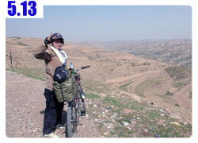

往蘭州的路上
因為昨天比較晚落腳，吃完飯都已經九點，加上整理遊記，所以熬夜了一下，睡覺的時候已經快12點。
隔天早上依然不到六點就自然睜開眼睛，但是今天可以賴床一下沒關係。
因為昨天騎的比較遠，今天要騎的路只有大概80公里就可以休息，
所以安穩的補眠到八點多，睡得很香甜。
出發前本來想買一包紅糖，以後沒事就可以用熱水泡來喝，但是找不到地方有在賣。
自己帶的美祿喝的剩下一包而已，得找機會補充一下沖泡式的飲品。
離開旅館，要接著走昨天下交流道的那公路時，居然被收費員攔下來，說自行車不能上去。
其實他說的是真的，我昨天有看到路上的告示牌，這一條其實是汽車專用道，但不知道為什麼腳踏車也可以走就是了。
我跟那個收費員說，我昨天才從這邊騎下來過夜，怎麼會今天就不能騎了呢？
他就說『原則上』這條路是不給自行車走的，之前的收費員為什麼放我上來他就不清楚了。
可能是我很清楚的說了我昨天是從秦安上來，今天要騎到定西去，
很明白的表示我知道這條路的細節，而不是胡亂的就誤騎上去。
所以他想了一下，還是放我上來讓我繼續騎了～
『歐耶！』心中大喊。
從通渭上了公路之後，只有26公里之外有一個出口兼休息站，之後就是80公里之外的定西。
一條路這麼長，今天就只有兩個地方可以看到城市，說這路單調還真不是普通的悶呀。

那就先輕鬆的往26公里之外的馬營休息站騎過去吧，到那邊剛好可以吃午餐。
一路上什麼事情都沒發生，除了偶爾我會被蜜蜂撞到頭之外，
突然咚的一聲撞上來，根本就來不及反應，有點像是超人被子彈打到的感覺，不會痛，可是很結實的K到我的頭。
撞了幾隻蜜蜂之後，休息站就到了，點了一盤大蔥炒蛋，配上一大碗白飯，味道還挺不錯的。
因為才騎一下子而已，所以沒休息就繼續往定西走，今天希望可以早一點找到睡覺的地方。
一整天都太陽不大，海拔兩千公尺很涼快，就算日正當中，氣溫依然維持在20度上下。
公路雖然很無聊，但還蠻好走的，反正到蘭州之前也沒什麼太值得期待的東西可以看。
現在如果被一個什麼人攔下來，問我要去哪的話？我會毫不猶豫的說我在往蘭州的路上。

路上也有看到山被開墾成梯田，但不知道是不是甘肅省很缺水的關係，梯田都種不出個什麼名堂來。
剛剛說過，這一路上就只有兩個出口可以下去，沿路什麼商店都沒有，所以我想亂花錢也沒辦法。
就聽著音樂乖乖騎車，腦袋放空成三歲模式，無聊的時候就玩『聽喇叭聲猜車種』的遊戲。
下午三點的時候，比計畫中還要早就抵達定西了，本來以為是個小地方，但卻也沒那麼小，還有個都市的樣子。
騎著小多東看看西看看，旅館好多間，會有這麼多人特地到這裡住嗎？
找一間離網吧近一點的旅館，這樣我就可以穿拖鞋散步過去。
一晚上20元的招待所，不知道為什麼我講中文，已經漸漸難以溝通。
現在不需要學北京腔講話，我都講很標準的台灣式中文腔，這樣發音比較標準，溝通的門檻比較低。
一晚上20元的房間，不是我關注的重點，我需要的是可以讓我洗澡和洗衣服的地方，
因為今天已經是沒洗澡的第三天了，身上的衣服也是穿了三天都沒有洗，包含襪子在內。
本來想去街上買洗衣粉，這個實在太好用了，比用肥皂洗還要乾淨一百倍。
結果旅館的人知道我要洗衣服，就借我一包洗衣粉。
跑到廁所去用臉盆接著水然後擦澡和洗頭，才洗一半而已，就被碰碰碰的敲門。
『先別洗啦，外面已經淹水了。』
哇哩，低頭一看地上，真的沒有排水孔耶，水就從廁所的門縫往外流，沿著樓梯從二樓流到一樓，
然後旅館的人才發現，急忙上來阻止我。
還好淹水的情形沒有很嚴重，只淹了廁所、走廊、兩間還沒住人的空房間、樓梯和一樓地板Orz
才剛住進來十分鐘而已，馬上就給人家闖禍了~_~
旅館的人用小掃把開始把水掃到畚箕，然後倒到臉盆裡，我為了表示歉意，就負責把臉盆裡的水倒到馬桶內沖走。
弄了半小時總算把我製造的災情給處理好，對不起，旅館的太太>"<
接下來我就很小心的用臉盆裝水洗衣服，然後水都要倒到馬桶內，不可以流到地上，以免二度淹水。
終於我又變成乾乾淨淨的人了，髒兮兮的衣服也在曬乾中，明天又可以穿的洗衣粉香味的衣服繼續旅行。
沿著這條原則上只給汽車走的公路，順利的話，明天就能抵達蘭州了呢*^^*
晚餐在隔壁吃蘭州牛肉麵，雖然沒有肉，但是湯頭真的超好喝的，光是喝這個湯頭就值得了。
還有現擀現做的手工麵，真是令人百看不厭，問我要吃寬麵還是細麵，然後才當場做，口感當然很棒！
點餐之後，櫃檯人員在收銀機打了2.9元這個數字@@"
因為我很不想收到1毛的零錢，所以之前我都會把它湊成整數來買。
那這次就要吃五碗牛肉麵才可以湊整數.....未免太撐了一點。
『這裡收小費嗎？』語畢把一毛給櫃檯，對方也是笑笑的就收下了:D
早上買不到的紅糖，晚上在定西的『煙糖酒批發部』買到了，一大包才兩塊五，雖然有點硬硬的，但不影響味道呀～
晚上泡一杯睡前的飲料，身體暖暖的很舒服。
繼續閱讀：5.13 新井夏代

中國-人民幣－ 1：4.3 台幣
5.12 |
總計：39.5元 |
午餐大蔥炒蛋、白飯10元、晚餐牛肉麵3元、紅糖一包2.5元、網吧兩小時4元、住店20元 |
|